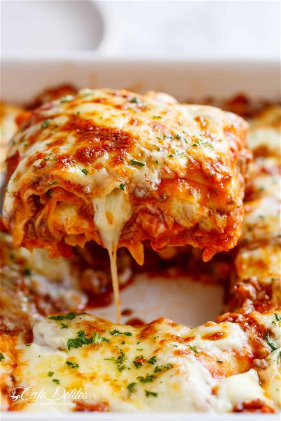

Lasagna

Best Lasagna
Indulge in the ultimate comfort food experience with our mouth-watering lasagna recipe.
Picture layer upon layer of tender pasta sheets, generously smothered in a rich and velvety
tomato sauce, interspersed with creamy ricotta and mozzarella cheese that melts into a golden
blanket of gooey perfection. With each forkful, you'll discover a symphony of flavors, from the
savory depth of the meaty filling to the comforting embrace of melted cheese, all bound together
by the hearty essence of tomatoes and Italian herbs.
As you slice into this culinary masterpiece, the tantalizing aroma of bubbling cheese and
aromatic spices fills the air, igniting your senses and stirring your appetite. Whether enjoyed
as a family dinner centerpiece or showcased at a festive gathering, our lasagna promises to be a
feast for both the palate and the soul, offering a taste of home-cooked comfort that's impossible
to resist. So gather your loved ones, set the table with anticipation, and prepare to embark on a
journey of culinary delight with every savory bite of our irresistible lasagna.
Ingredients
Meat Sacue
- 1 tablespoon olive oil
- 1 onion, finely chopped
- 1 carrot, finely diced
- 4 cloves garlic cloves, minced
- 700 grams ground beef mince
- 300 grams ground pork mince, or beef
- 700 grams Passata
- 410 grams crushed tomatoes
- 3 heaped tablespoons tomato paste, (I use garlic and herbs flavoured)
- 2 beef or vegetable bouillon cubes, crushed
- 1 teaspoon each dried oregano and basil
- 1/2 teaspoon sugar, (if desired)
- Salt and pepper, season to your tastes
Bechamel
- 4 tablespoons butter
- 1/4 cup flour, all purpose or plain
- 3 1/2 cups milk
- 1 cup fresh shredded parmesan
Lasagna
- 13 ounces (375 grams) fresh lasagna sheets
- 17 ounces (500 grams) fresh mozzarella cheese, shredded
- 2 tablespoons finely chopped fresh parsley
Cooking Instructions
Meat Sauce
- Heat oil in a large pot over medium heat, then add in the onion and carrots and cook for
8-10 minutes, or until softened. Add in the garlic and sauté for about 1 minute, until
fragrant.
- Add beef and pork (if using) and cook while breaking it up with the end of your spoon,
until browned.
- Pour in the Passata, crushed tomatoes, tomato paste, crushed bouillon
and dried herbs. Mix well to combine and bring to a gentle simmer. Season
with desired amount of salt and pepper (I use about 3/4 teaspoon each) and sugar
if needed. Cover and cook for about 20-30 minutes, occasionally mixing,
until the sauce has thickened slightly and meat is tender.
Adjust salt, pepper and dried herbs to your taste.
Bechamel
- In a large pot, melt butter over medium heat. Remove from hot plate; add the flour and
whisk for about 30 seconds, or until well blended.
- Place pot back onto stove, reduce heat down to low and slowly whisk in 1 cup of the
milk until well combined. Once well blended, add the remaining milk in 1 cup increments,
mixing well after each addition, until all the milk is used and sauce is free from lumps.
- If the sauce is too thick, add a little more milk until it turns into a nice and creamy
consistency.
- Increase heat to medium and continue cooking sauce while stirring occasionally
until it thickens (about 6-7 minutes) and coats the back of your wooden spoon.
Add in the parmesan cheese and remove from heat. Season with salt and pepper and
mix until the cheese is melted through.
Assembly
- Preheat oven to 350°F | 180°C.
- Spoon about 1 cup of meat sauce on the base of a 9x13-inch baking dish, then cover
with lasagna sheets. (Trim sheets to fit over the meat if needed.) Layer with 2
cups of meat sauce (or enough to cover pasta), 1 cup of white sauce and half of
the mozzarella cheese. Repeat layers (leaving the remaining cheese for the top).
- Pour the remaining meat sauce and white sauce over the last layer of lasagna
sheets and top with the remaining mozzarella cheese. Bake for 25 minutes or until
golden and bubbling.
- Garnish with parsley and let stand for about 10 minutes before slicing and serving.